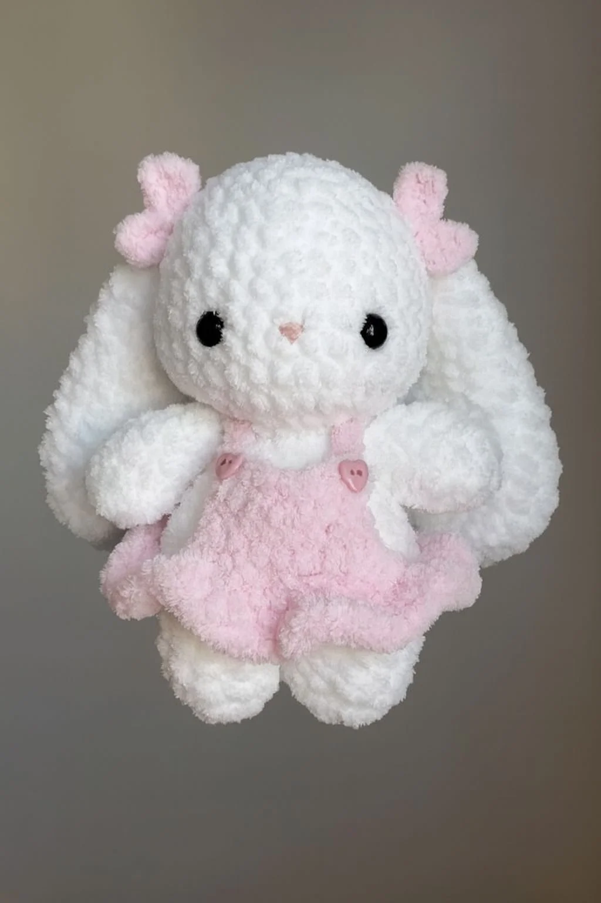

Estos conejitos han sido creados para acompañarte donde quieras, con accesorios y ropita intercambiable que les da un toque diferente en cada momento. Son tiernos, coloridos y perfectos como obsequio especial o para quienes coleccionan detalles originales y llenos de creatividad.

Lana bouclé - blanca
aguja de crochet de 3,5 mm
2 ojos de seguridad de 12 mm
alambre de 1 mm
tijeras